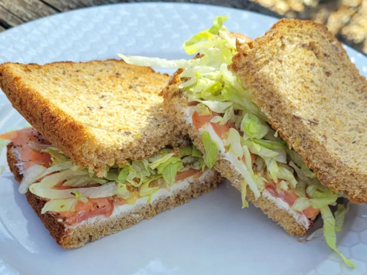

Salmon Sandwitch

Descrition
This smoked salmon sandwich is fast to make and full of flavor. Delicious on a warm day!
Ingredients
- 2 slices whole wheat bread
- 1 tablespoon cream cheese
- 1 tablespoon creamy goat cheese (Optional)
- 2 slices smoked salmon
- 1 teaspoon olive oil
- ½ teaspoon dried dill, or to taste
- ground black pepper to taste
- ½ cup shredded lettuce
Directions
- Toast bread in a toaster or toaster oven.
- Spread cream cheese and goat cheese on 1 slice of toast. Add smoked salmon on top. Add olive oil, dill, and black pepper. Cover with lettuce and top with the other slice of toast.